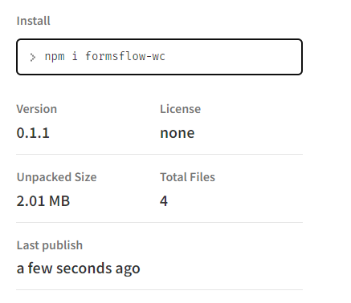

Form embedding
Form embedding will help you to convert your form into a component and to use the form in any website that you wish. And you can use this form component in any javascript frameworks.
Below steps will describes how to use the form embedding option
- Install npm package formsflow-wc 
- Import 'formsflow-wc'
- Use component <formsflow-wc url="" ></formsflow-wc>
import './App.css';
import 'formsflow-wc';
function App() {
return (
<div className="App" >
<formsflow-wc url=""></formsflow-wc>
</div>
);
}
export default App;
Here 'formsflow-wc' is your webcomponent.There is an attribute called ‘url’ inside the component so you can pass your form url inside that attribute. This is only applicable for anonymous forms . You are not able to use authorized forms in this component.